Paris Fashion Week Street style
- No.
- 13
- Year
- 2024
- Discipline
- Photography
- Type
- Street-style photo essay
- Place
- Paris
- Featuring
- Designs by Jenny Fax

On the streets of Paris, stylish individuals were photographed showcasing standout pieces, including select designs from Jenny Fax.
This photo series celebrates spontaneous fashion moments and captures the creative spirit of Paris Fashion Week.
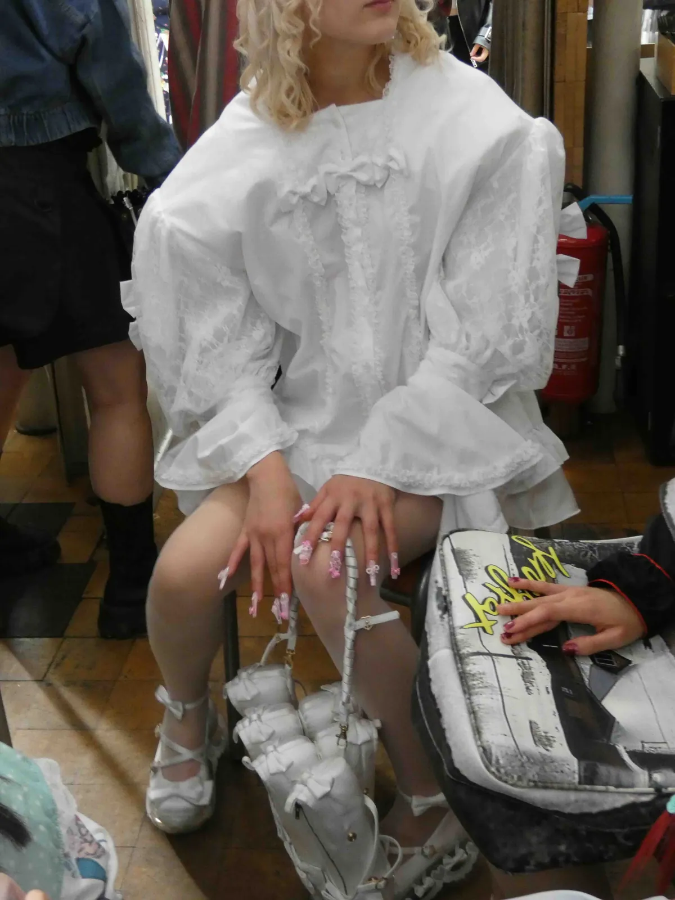
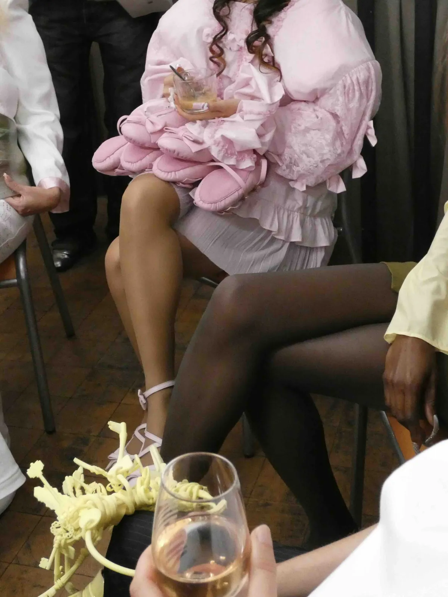
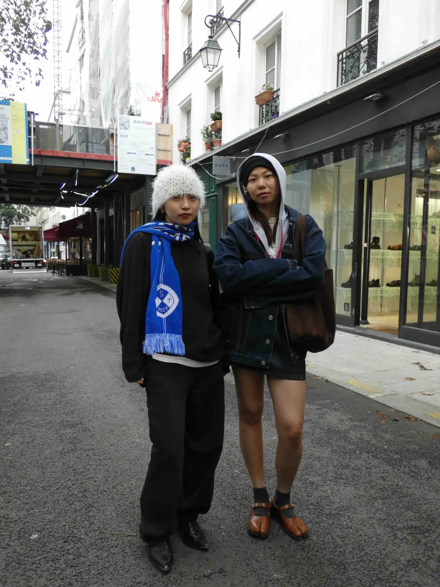
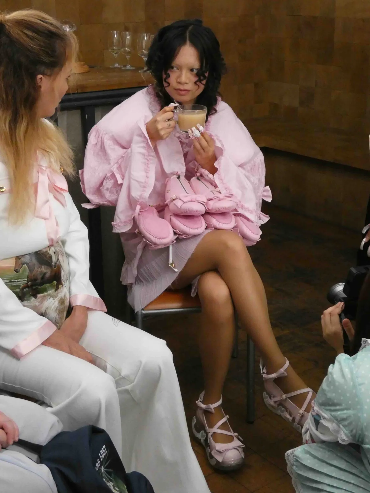
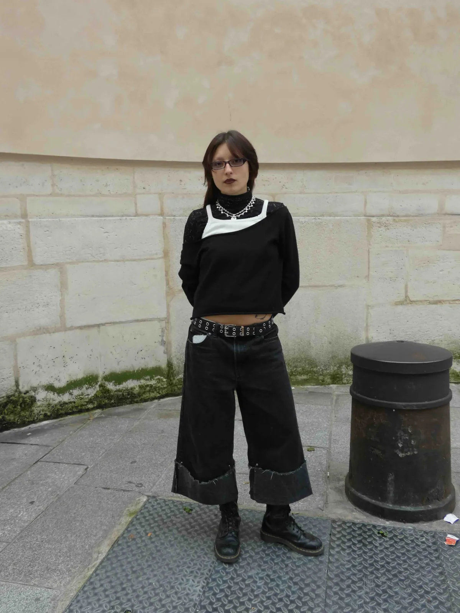
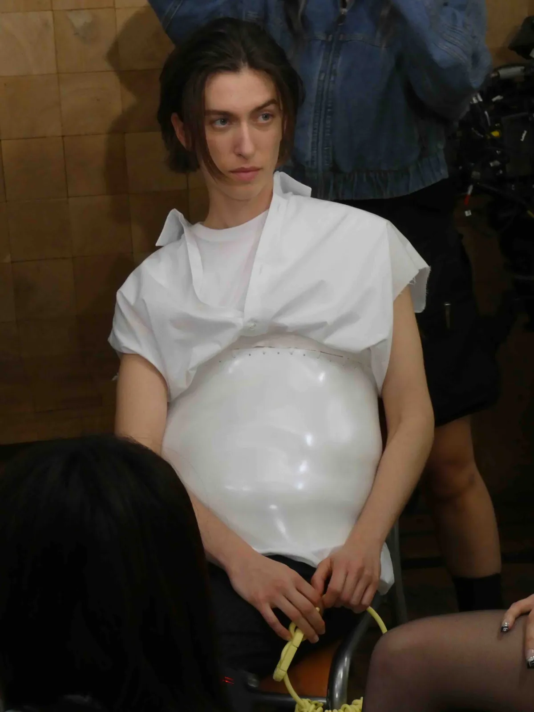
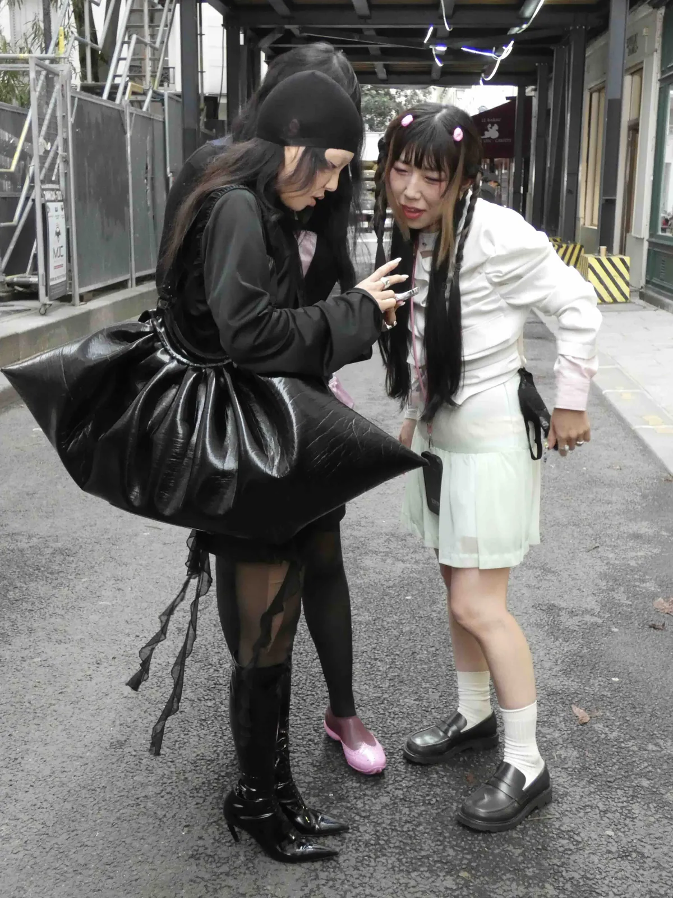
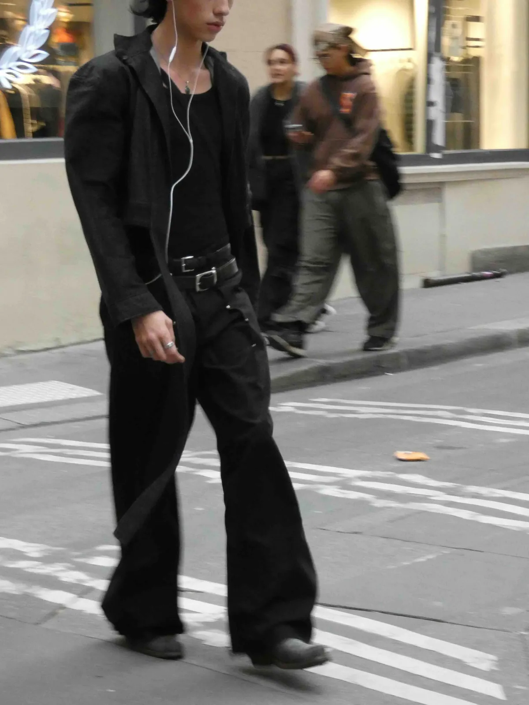
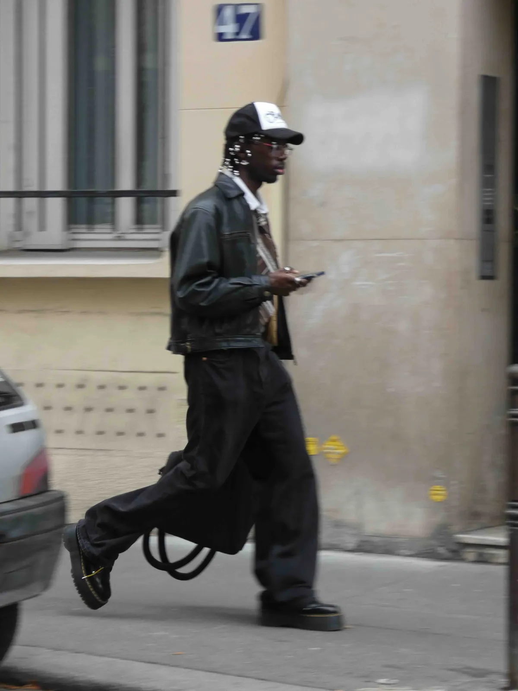
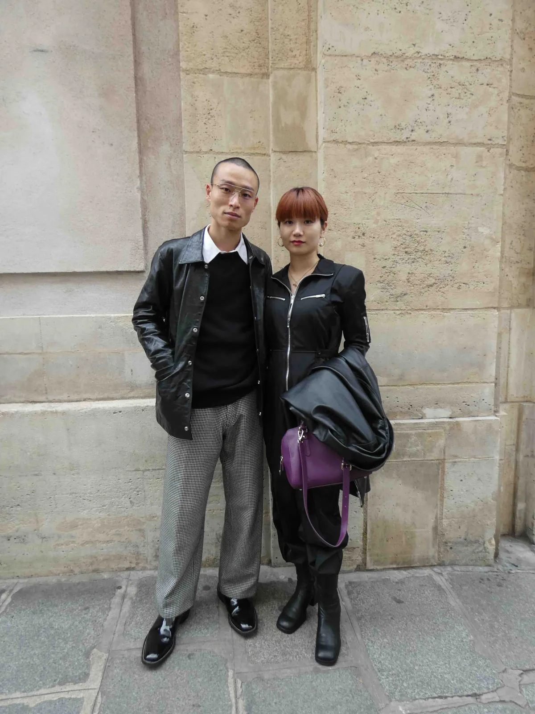
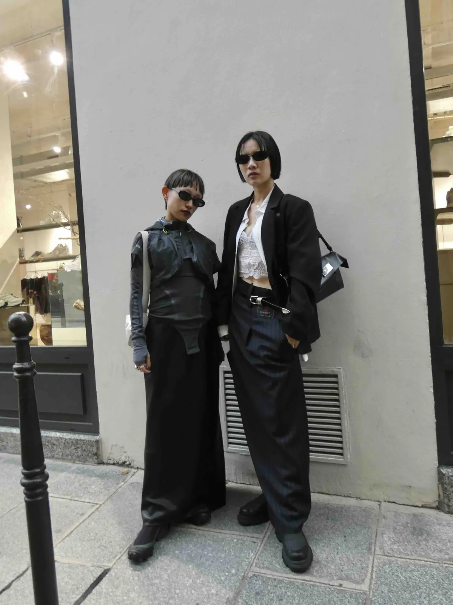